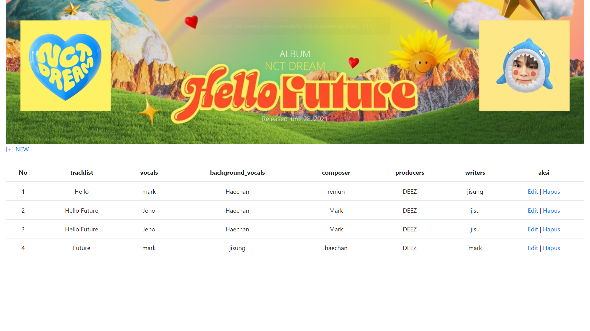

Hello, I’m Febiana.

01 / EXBIE LIBRARY
Website user Exbie Library
More shots from this project ↗
02 /Album NCT DREAM Hello Future
Website list track music album NCT DREAM “HELLO FUTURE”
More shots from this project →
